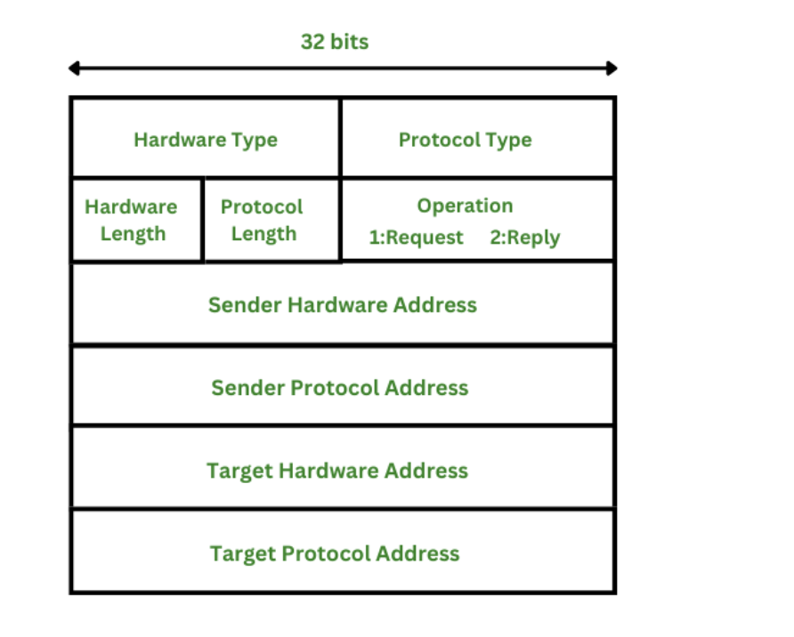

OSI Model & ARP Format & RARP - 课堂笔记
Contents
OSI 和 TCP/IP 模型
ARP 是 Data Link layer 的协议, 先看一下 OSI 模型:
- Physical layer
- WiFi (802.11) operates at the first two layers of the OSI model, in other words, the physical layer and the data link layer.
- Data Link layer
- WiFi (802.11)
- ARP (Address Resolution Protocol)
- Network layer
- IP (Internet Protocol)
- ICMP (Internet Control Message Protocol)
- Transport layer
- TCP (Transmission Control Protocol)
- UDP (User Datagram Protocol)
- Session layer
- Presentation layer
- Application layer
- HTTP - for web applications
- FTP - for file transfer
- DNS - converts hostnames to IP addresses
- SMTP - for email
TCP 模型:
- Network Access layer, combines the physical and data link layers of the OSI model.
- Internet layer
- Transport layer
- Application layer, combines the session, presentation and application layers in OSI.
了解了每一层都是什么, 以及每个协议工作在哪一层, 有便于对协议的信息格式有个整体的把握, 比如知道 ARP 协议工作在 data link 层, 而 IP 协议在 data link 之上, 所以 ARP 信息肯定包括 IP 地址等信息,
ARP
The Address Resolution Protocol is a data link layer protocol used to map MAC addresses to IP addresses. All hosts on a network are located by their IP address, but NICs do not have IP addresses, they have MAC addresses.

Hardware type: This is 16 bits field defining the type of the network on which ARP is running. Ethernet is given type 1.
Protocol type: This is 16 bits field defining the protocol. The value of this field for the IPv4 protocol is 0800H.
Hardware length: This is an 8 bits field defining the length of the physical address in bytes. Ethernet is the value 6.
Protocol length: This is an 8 bits field defining the length of the logical address in bytes. For the IPv4 protocol, the value is 4.
Operation (request or reply): This is a 16 bits field defining the type of packet. Packet types are ARP request (1), and ARP reply (2).
Sender hardware address: This is a variable length field defining the physical address of the sender. For example, for Ethernet, this field is 6 bytes long.
Sender protocol address: This is also a variable length field defining the logical address of the sender For the IP protocol, this field is 4 bytes long.
Target hardware address: This is a variable length field defining the physical address of the target. For Ethernet, this field is 6 bytes long. For the ARP request messages, this field is all Os because the sender does not know the physical address of the target.
Target protocol address: This is also a variable length field defining the logical address of the target. For the IPv4 protocol, this field is 4 bytes long.
课本给的 Ethernet 类型的 ARP 格式:

RARP
RARP协议的产生原因
ARP（地址解析协议）是设备通过自己知道的IP地址来获得自己不知道的物理地址的协议。假如一个设备不知道它自己的IP地址，但是知道自己的物理地址，网络上的无盘工作站就是这种情况，设备知道的只是网络接口卡上的物理地址。这种情况下应该怎么办呢？RARP（逆地址解析协议）正是针对这种情况的一种协议。
RARP以与ARP相反的方式工作。RARP发出要反向解析的物理地址并希望返回其对应的IP地址，应答包括由能够提供所需信息的RARP服务器发出的IP地址。虽然发送方发出的是广播信息，RARP规定只有RARP服务器能产生应答。许多网络指定多个RARP服务器，这样做既是为了平衡负载也是为了作为出现问题时的备份。
RARP协议的工作原理
（1）源主机发送一个本地的RARP广播，在此广播包中，声明自己的MAC地址并且请求任何收到此请求的RARP服务器分配一个IP地址；
（2）本地网段上的RARP服务器收到此请求后，检查其RARP列表，查找该MAC地址对应的IP地址；
（3）如果存在，RARP服务器就给源主机发送一个响应数据包并将此IP地址提供给对方主机使用；
（4）如果不存在，RARP服务器对此不做任何的响应；
（5）源主机收到从RARP服务器的响应信息，就利用得到的IP地址进行通讯；如果一直没有收到RARP服务器的响应信息，表示初始化失败。
参考:
Author David
LastMod 2023-06-27